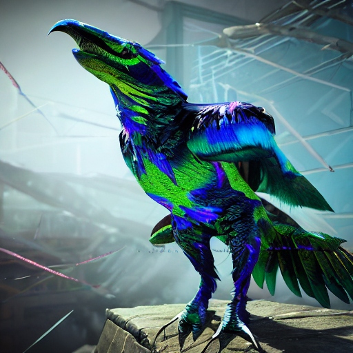

Description: The Razorbeak Raptor is a fearsome avian predator with razor-sharp talons and a serrated beak. Its feathers are iridescent, shimmering with hues of blue and green. They are highly territorial and aggressive, Razorbeak Raptors are skilled hunters that stalk their prey from above before swooping down to deliver a swift, fatal strike.They roam the open skies and rocky cliffs of Tozathadax, often nesting in high-altitude crevices and caves. They are carnivorous, preying on small creatures such as Shriekwing Bats and other avian species. Adult Razorbeak Raptors have few natural predators due to their formidable size and agility. They can live for up to 25 standard Tozathadaxian years.
Planet: Tozethadax